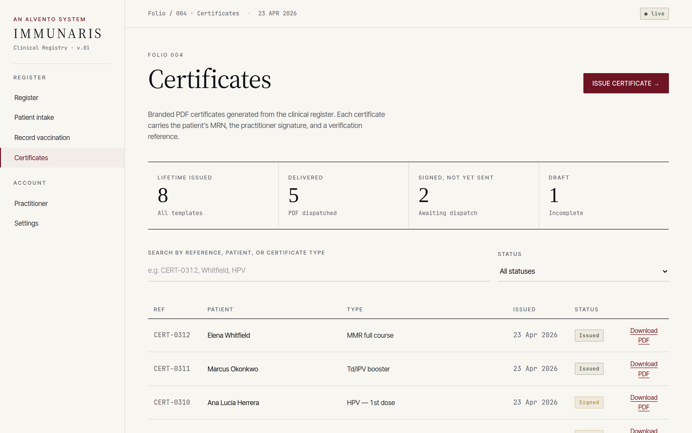
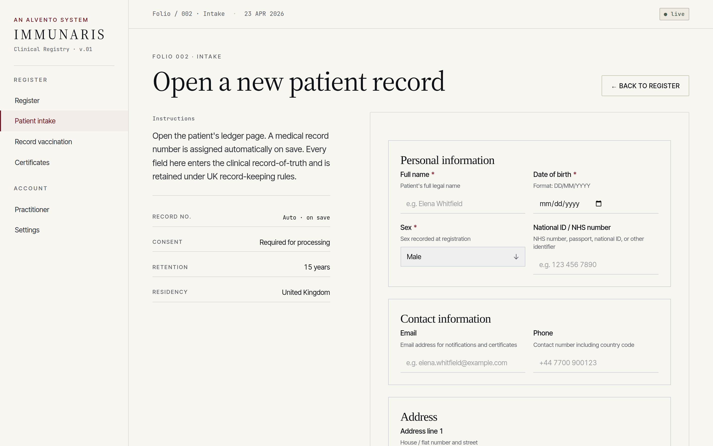
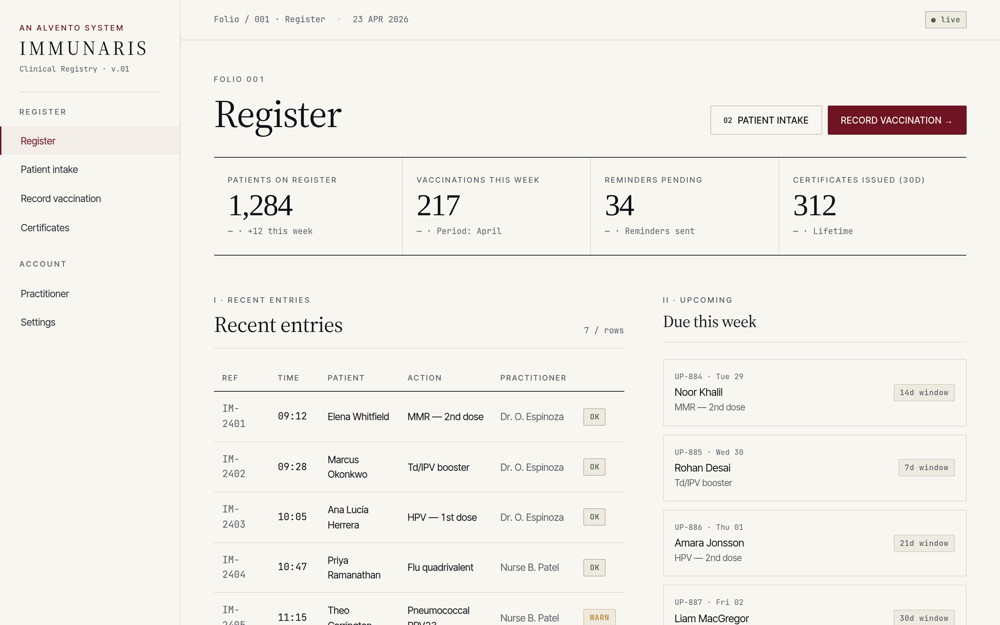
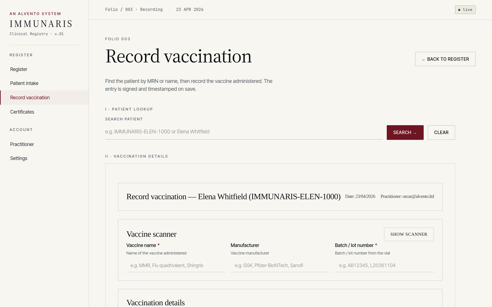

We built Immunaris to show, in one artefact, how we believe regulated-medtech software should behave — and what it looks like when compliance, retention, and auditability are load-bearing from the first commit.


Registries, royal colleges and clinical services fail inspections not because care is bad, but because the record is unprovable. Vaccination history still lives in paper folders, GP silos and spreadsheets — and when an outbreak, an audit, or a recall response arrives, none of those produce the signed, time-stamped, attributable record that the moment requires.
Generic electronic-record products solve parts of this. Very few solve it with a retention model, an auditable ledger and an accessibility posture that survives contact with a UK regulator or a royal-college inspection.
“The record is not a by-product of clinical work. The record is the clinical work, made defensible.”
That belief is why we build clinical systems the way we do — and why Immunaris exists as a reference artefact for how we think one should look.
Most clinical SaaS treats compliance as a feature added late. We treat it as the shape of the schema, the shape of the UI, and the shape of the database permissions — decided on day one, visible to the reviewer on page one.
Lawful basis, clinician ID, consent, retention class and cohort are columns, not comments. The record cannot exist without them — so the record cannot drift out of compliance later.
Every clinical event is a signed, timestamped, attributable entry. Corrections are new events that reference the original — no silent edits, no rewrites of history. What a reviewer sees is what actually happened.
Clinic, cohort, and role scoping are enforced in Postgres via row-level security — not in application code where a single bug breaches it. Getting this right at the DB layer is the difference between a secure system and a breach waiting to happen.
Clinical Archive — our editorial design language — borrows from printed ledgers and case notes: restrained serifs, ruled lines, oxblood accents for warnings, reading-first layout. Before a field is read, the user knows the system treats its contents as clinical, not consumer.
This is a category contrast, not a product comparison. We’re describing the defaults we see across generic clinical-record and EHR-adjacent tooling — not any specific vendor — and the choices we made instead.
Fair comparison: category defaults we’ve observed, not claims about any named vendor.
Each folio is narrow on purpose. A clinician doing one job should see only what that job needs, with every action signed and traceable.
A ledger of every patient under care, filterable by cohort, due date, risk group or clinic. Built to answer “who still needs their second dose?” in one screen.

Structured intake capturing identity, lawful basis for processing, allergies, existing immunisation history and consent — validated at the boundary, not at submission.

Vaccine product, batch, site of administration, clinician, timestamp — captured as a single signed event that lands in the append-only ledger and the patient record simultaneously.

Printable, signed immunisation certificates for the patient, their GP, occupational health or travel clearance — generated from the ledger, not a separate document store.

Consent, vital interests and public-task basis are recorded explicitly at intake, with data-subject rights surfaceable on request.
Each screen shows only the identifiers the task requires. Downstream reports default to de-identified cohorts unless an explicit clinical justification is attached.
Adult records retained for ten years after last contact; paediatric records until age twenty-five. Retention is enforced by a sweeper that can be audited and overridden with justification.
No silent edits. Corrections are written as new signed events that reference the original, keeping the clinical narrative intact.
Every clinical event is stored as an immutable record in a tamper-evident ledger, exportable as an inspection pack for CQC, sponsors or internal governance.
Data isolation between clinics, cohorts and roles is enforced at the Postgres layer via Supabase RLS — not in the application, where a single bug would breach it.
We chose a stack a second engineer can pick up on day one and a reviewer can reason about without a tour: typed frontend, a real database with real constraints, validation at the boundary.
The embedded build below runs against stubbed auth and seeded demo data — no real patient information. The production build runs against Supabase with RLS and clinician sign-in.
Or open in a new tab → immunaris-case-study.vercel.app
Source code is private and owned by Alvento Ltd. The schema, design system and compliance posture shown here are the artefacts we sell — not the source.
If you’re a professional body, a clinical registry or a medtech team and you want something that reads like a clinical instrument rather than a startup dashboard — we build these.